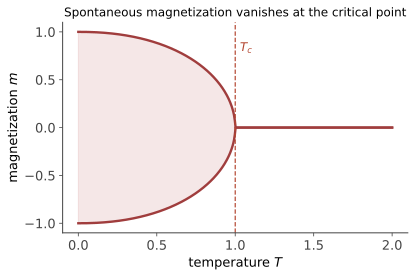

本页目录
统计进阶 II · Ising 模型
对标：Goldenfeld §3 / Baxter 入门 ｜ 前置：asm-01、sm-02、ma-03（转移矩阵 = Perron 的舞台） 统计物理的果蝇：\(H = -J\sum_{\langle ij\rangle}s_is_j - h_{\mathrm{phys}}\sum_i s_i\)（\(s_i = \pm1\)）。本页三场战役：一维精确解（转移矩阵法——无相变的证明）、平均场解（自洽方程）、二维 Onsager 结果（精确解与平均场的对照表）。Ising 同时是 ML 的老朋友——Hopfield 网络与玻尔兹曼机就是它。
学习层：从一块会翻面的磁铁到自发对称破缺
具体情境：降温时，平均磁化会选哪一边？
想象把一块理想铁磁材料缓慢降温，测量许多自旋的平均磁化 \(m=\langle s_i\rangle\)。在无外场时，向上与向下没有物理偏好；但低温下，材料却可以停留在一个宏观的正磁化或负磁化状态。问题是：“没有偏好”为什么不必等于“永远只能测到零”？
这里的“选一边”是热力学极限中的纯相/平衡分支语言。有限样品在足够长时间内可能在两个分支之间翻转，于是时间平均又接近零；这不等于低温自由能没有两个简并极小值。
先预测：先别拖滑块，写下三个判断
先预测下面实验台会显示什么：
- \(t=0.8,\ h=0\) 时，\(m=0\) 是极小值、极大值，还是根本不是驻点？还会不会有两个对称的非零根？
- \(t=1.2,\ h=0\) 时，是否仍有三根？如果只剩一根，它在哪里？
- 保持 \(t=0.8\)，把 \(h\) 调成正数：正、负两个分支谁成为全局平衡？另一个分支会不会立即从数学上消失？
预测的对象是驻点与自由能，不是一次 Monte Carlo 抽样的微观快照。
最小模型：明确标注的无量纲 Curie–Weiss 平均场
本实验不是精确二维方格 Ising，而是 Curie–Weiss/Weiss 平均场的无量纲教学模型。令 \(t=T/T_c>0\)，其中 \(T_c\) 是这个平均场模型自己的临界温度；令 \(h=h_{\mathrm{phys}}/(Jz)\) 为除以平均场能标后的无量纲外场，\(m\in[-1,1]\) 为序参量。定义
它是无量纲自由能密度（与 \(m\) 无关的常数不影响驻点和比较平衡）。第一项记录平均相互作用的能量账本，\(\log[2\cosh(\cdot)]\) 来自单自旋配分函数/熵；只有两项的竞争才是自由能，不要把任意一项单独当成完整能量。求导得到
所以驻点恰好满足自洽方程
而 \(\phi''>0\) 是局部稳定极小值，\(\phi''<0\) 是不稳定极大值；局部极小值中自由能最低者才是全局平衡，另一个局部极小值称为亚稳态。
动手实验：同时看地形、交点和平均磁化示意
先用默认的 \(t=0.8,h=0\) 核对预测，再依次试 \(t>1\)、小的正负 \(h\)，最后把温度压低并观察根是否靠近 \(\pm1\)。实验用确定性的扫描、单调分段二分与去重找出 \([-1,1]\) 内全部驻点；它不抽随机数。右下的图明确是“由平均磁化构造的示意格点”：它把各分支的 \(m\) 转成固定数量的 \(+\)/\(-\) 格点，只帮助读出序参量，不是 Monte Carlo 微观构型，也不表示 Curie–Weiss 模型有真实空间邻居。
无 JavaScript 时也可读：实验求解的是上面的 \(\phi\) 与 \(m=\tanh((m+h)/t)\)。默认核对状态为 \(t=0.8,h=0\)：
| 驻点 \(m\) | \(\phi(m)\) | \(\phi''(m)\) | 分类 | 全局平衡 |
|---|---|---|---|---|
| \(-0.710412\) | \(-0.583200\) | \(0.380856\) | 稳定极小值 | 是，与正根简并 |
| \(0\) | \(-0.554518\) | \(-0.25\) | 不稳定极大值 | 否 |
| \(+0.710412\) | \(-0.583200\) | \(0.380856\) | 稳定极小值 | 是，与负根简并 |
因此 \(m=0\) 虽然总是自洽方程的一根，却不是低于临界温度时的平衡态；正、负两个平衡分支都必须保留。
误区 / 边界：这套实验没有声称什么
- 不是精确二维解：这里的 \(t=1\) 是 Curie–Weiss 平均场的无量纲临界点。二维方格最近邻 Ising 的精确结果是 \(k_BT_c/J=2/\ln(1+\sqrt2)\approx2.269\)，而方格的简单平均场给出 \(k_BT_c^{\mathrm{MF}}/J=z=4\)；若用平均场 \(T_c^{\mathrm{MF}}\) 归一化，二维精确临界温度当然不等于无量纲的 1。
- 不是把平均场当成涨落的替代品：Curie–Weiss 假设每个自旋感受同一个平均磁化，漏掉空间涨落、畴壁和真实格子的维数效应；因此临界指数也会错，平均场的磁化指数是 \(1/2\)，二维精确值是 \(1/8\)。
- 不是一维最近邻 Ising 的结论：一维最近邻链在任意有限温度都没有自发磁化相变；把同一平均场公式硬套到一维会制造假的正临界温度。
- 亚稳态不是第二个全局平衡：外场 \(h\neq0\) 破坏 \(m\mapsto-m\) 对称，偏好方向的极小值通常是全局平衡，反向极小值若仍存在只是亚稳态；迭代动力学可能因势垒而滞后，但这不改变平衡判据是比较 \(\phi\)。
- 示意格点不是采样：图中格点数量由平均磁化确定，颜色和排列是可复现的画法；没有随机数，也没有声称显示某个时刻的微观构型。
回到定理：曲率判据如何给出临界点？
在 \(h=0\) 时，\(\phi\) 是偶函数，\(m=0\) 永远是驻点，而且
当 \(t>1\) 时，自洽曲线的最大斜率小于直线 \(m\) 的斜率，\(m=0\) 是唯一稳定根；当 \(t<1\) 时，\(m=0\) 变成不稳定极大值，并出现对称的 \(\pm m_*\) 两个稳定根。\(t=1\) 处二次曲率消失，但不是“没有驻点”：展开为
正的四次项把临界点的局部地形托住；由自洽方程展开还可得 \(m_*\sim\sqrt{3(1-t)}\)，这就是平均场的连续二级相变与磁化指数 \(1/2\)。外场把两个对称井倾斜；在低温小场区域可能仍有三个驻点（全局极小值、亚稳极小值、中央极大值），到 spinodal（旋节）线时极小值与极大值合并并消失。
迁移题：把“看图找根”变成可迁移的判断
- 取 \(t=0.95,h=0\)，先用四次展开估计 \(m_*\)，再用 \(m=\tanh(m/t)\) 数值核对；说明误差在离临界点多远时开始变大。
- 取 \(t=0.8,h=0.05\)，求出所有驻点，按 \(\phi''\) 分类，再比较各自 \(\phi\)；解释为什么外场符号决定全局分支，而不必让另一根立刻消失。
- 把同一个问题分别放回一维链、二维方格和 Curie–Weiss 全连接模型，列出每个模型的相变结论、临界温度标度和“忽略了什么”。最后回答：如果实验数据出现强烈空间涨落，哪一条平均场推理最先需要被替换？
1. 一维精确解：转移矩阵法
【推导（完整）】 周期链的配分函数按键分解：
其中 \(2\times2\) 转移矩阵 \(T_{ss'} = e^{\beta Jss' + \frac{\beta h_{\mathrm{phys}}}{2}(s + s')}\)。求迹 = 特征值之和：\(Z = \lambda_+^N + \lambda_-^N \approx \lambda_+^N\)（热力学极限由最大特征值统治——ma-03 Perron–Frobenius 的物理正身：\(T\) 元素恒正 ⇒ \(\lambda_+\) 非简并）。\(h_{\mathrm{phys}} = 0\) 时 \(\lambda_\pm = 2\cosh\beta J,\ 2\sinh\beta J\)：
这里的 \(f\) 是每个自旋的自由能。它对有限 \(T>0\) 处处解析，因此在 \(h_{\mathrm{phys}}=0\) 的热力学极限中没有自发磁化相变；有非零外场时磁化可以非零，但仍随参数解析变化。
为什么一维不了（Peierls 论证直觉）：周期链中翻转一段内部自旋会产生两个畴壁；每个断键相对对齐键的代价是 \(2J\)，所以总能量代价是 \(4J\)，且与段长无关。可放置畴的位置数至少随链长增长，位置熵含有 \(k_B\ln N\) 项——\(T>0\) 时熵会打碎长程有序。二维中畴壁能量随周长增长，才有机会与熵竞争；Peierls 论证据此严格证明二维低温有序【引用】。
2. 平均场解（Weiss 自洽场）

每个自旋感受邻居的平均场 \(h_{\mathrm{eff}} = Jzm\)（\(z\) = 配位数）。若保留有能量单位的外场 \(h_{\mathrm{phys}}\)，单自旋自洽式为
无外场时直线 \(m\) 与曲线 \(\tanh(\beta Jzm)\) 的交点给出 \(T_c^{\mathrm{MF}}=Jz/k_B\)；若令 \(t=T/T_c^{\mathrm{MF}}\)、\(h=h_{\mathrm{phys}}/(Jz)\)，就正好得到学习层使用的 \(m=\tanh((m+h)/t)\)。\(T<T_c^{\mathrm{MF}}\) 出现非零解对，是对称破缺的图解版；在临界点附近展开双曲正切会回收 Landau 理论，磁化临界指数为 \(\beta_{\mathrm{mag}}=1/2\)。
失误清单：平均场把一维错误地预言为 \(T_c^{\mathrm{MF}}=2J/k_B>0\)，而一维精确解说没有有限温相变；二维方格的简单平均场给 \(T_c^{\mathrm{MF}}=4J/k_B\)，精确值却是 \(k_BT_c/J=2.269\)。这正是忽略空间涨落的代价。
3. 二维 Onsager（对照表级掌握）
定理（Onsager 1944）【引用】 二维方格、\(h_{\mathrm{phys}}=0\) 时精确可解：
比热对数发散（\(\alpha=0_{\log}\)）；Yang 1952 给出 \(\beta_{\mathrm{mag}}=1/8\)。
| 指数 | 平均场 | 二维精确 | 三维（数值/共形自举【引用】） |
|---|---|---|---|
| \(\beta_{\mathrm{mag}}\) | 1/2 | 1/8 | 0.326 |
| \(\gamma\) | 1 | 7/4 | 1.237 |
| \(\alpha\) | 0（跳变） | 0（对数） | 0.110 |
读法：指数只依赖维数与对称性（普适性——液气临界点与三维 Ising 同指数：实验证实的惊人事实），不依赖格子细节/相互作用强度——“为什么”是 asm-03 重整化群的中心问题。Onsager 解的技术（转移矩阵的无穷维对角化/费米子化【引用】）属专门课，结果与含义是常识级必备。
4. Ising 的第二人生：机器学习
同一个能量函数的四张面孔：Hopfield 联想记忆（\(J_{ij}\) 存模式、动力学下坡到记忆——能量景观语言）；玻尔兹曼机（Ising 的学习版：调 \(J_{ij}\) 使 Boltzmann 分布拟合数据——受限版 RBM 是深度学习史前史的主角）；MCMC 采样的试验场（Metropolis 算法的原生舞台——comp-01 主角）；自旋玻璃（随机 \(J_{ij}\)）→ 神经网络损失面的统计物理【引用 Parisi 线】。“能量模型”这个 ML 词汇的能量，就是本页的 \(H\)——两个学科在同一公式上各自发展了五十年。
5. 练习与要点
例 1（转移矩阵练手） 加场的一维链：写出 \(T\)、算 \(\lambda_+\)、磁化
\(T\to0\) 时在固定非零外场下趋向阶跃，\(T>0\) 时光滑（无相变的显式面目）；顺手对账 ma-03：“最大特征值的一切”。
例 2（Peierls 估算二维 \(T_c\)） 长度为 \(L\) 的一条畴壁有 \(L\) 个断键，每个断键代价 \(2J\)，所以能量粗算为 \(2JL\)；若采用周期条带并有两条壁，则再乘 2。构型熵 \(\sim k_B L\ln3\)（自回避行走的粗算）⇒ 畴壁自由能变号于 \(k_BT\sim2J/\ln3\approx1.8J\)，与 Onsager \(2.269J\) 同量级：三行估算摸到精确解的门口。
例 3（RBM 对账） 写出 RBM 能量
可见—隐藏二部 Ising + 局域场——对比学习规则 = 用数据均值与模型均值之差调 \(J\)（最大似然的梯度，信息论线 MLE=KL 的又一实例）。\(\blacksquare\)
下一页：普适性之谜的解答——重整化群：把“粗粒化”变成动力系统，临界指数 = 不动点的特征值。